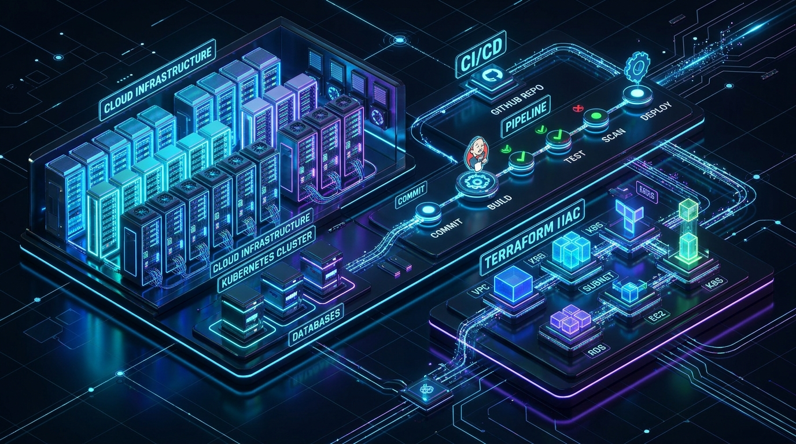

Enterprise DevOps
Azure Cloud Platform
Welcome to the deployed web application! This application is provisioned, packaged, and automated via GitHub, Jenkins CI/CD, Terraform, and Microsoft Azure Linux VM (Nginx).

Automated Deployment Stack
GitHub → Jenkins → Terraform → Azure VM
Real-time Telemetry
Live CPU utilization, active connection tracking, and responsive request simulator.
Interactive CI/CD Visualizer
Watch Jenkins pipeline stages execute in real-time with streaming terminal logs.
Terraform Topology
Explore the virtual network, subnet, security group rules, and Linux host configuration.
Live Application Telemetry
Real-time performance monitoring and simulated request throughput.
Server Load & Latency (Live Canvas)
60 FPS TelemetryHost & Infrastructure Health
Automated CI/CD Pipeline Simulator
Interactive execution of the stages defined in Jenkinsfile.
Pipeline: azure-jenkins-cicd-job #42
Trigger: Commit on
master branch • Agent: Any (Ubuntu)
Cloud Deployment Task Manager
Manage infrastructure tasks, security rotations, and release checklists with persistent storage.
Azure Infrastructure Topology
Click any component to inspect its Terraform HCL definition and cloud parameters.
Live Diagnostic Inspector
Test application health endpoints and inspect simulated JSON responses.